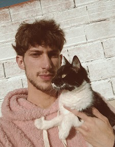

HOLAAA, TE ENCONTRASTE MÍ PORTAFOLIO
ME PRESENTO, YO SOY...
Giuliani
Lucas Matías
UN POCO DE MÍ
Mi nombre es Lucas Matías Giuliani, nací el 14 de abril de 2004. Actualmente curso la Licenciatura en Diseño y Comunicación Visual en la Universidad Nacional de Lanús. Paralelamente, trabajo en un Grow Shop y en la tienda de mascotas, además de realizar proyectos independientes vinculados a la gestión de redes sociales, como la creación de reels, diseño de feeds y producción fotográfica. El diseño es mi principal pasión, un campo en el que busco desarrollarme de manera integral. Mi objetivo es dejar una huella significativa en la historia del diseño, aportando creatividad, innovación y compromiso en cada proyecto.
TRABAJOS DESTACADOS

El Maratón
>“La maratón de representaciones” se realizó en el mes de octubre de 2024, con motivo de la celebración de los 20 años de la carrera de Diseño y Comunicación Visual en la UNLa. El proyecto convocó a 31 estudiantes y graduados de la carrera, a realizar un dibujo por día hasta completar el mes. La serie de dibujos dan como resultado una animación colectiva, representando el espíritu de lo que es o fue su paso por la universidad. En esta muestra podremos apreciar los dibujos realizados.

¡URGE!
URGE! Diseño para la emergencia ambiental: El afiche del pingüino cubierto de basura se presenta como una metáfora visual directa y conmovedora de la crisis ambiental que atravesamos. La elección del pingüino (un animal asociado con la pureza, el hielo y la fragilidad de los ecosistemas polares) confronta al espectador con la crudeza de un hábitat invadido por los residuos humanos. El diseño apela a la sensibilidad colectiva al evidenciar cómo la contaminación y el consumo desmedido afectan incluso a las especies más alejadas de la vida urbana. En el marco de URGE! Diseño para la emergencia ambiental, esta pieza no solo comunica, sino que denuncia y moviliza: invita a repensar el rol del diseño como herramienta de transformación social, capaz de generar conciencia y de impulsar acciones urgentes frente al deterioro del planeta.

¿Por Qué?
La injusticia política es el caldo de cultivo perfecto para la desesperación. Cuando un gobierno toma decisiones que privilegian a unos pocos y castigan a la mayoría, se rompe el pacto social. La gente, que confía en que sus líderes actúen por el bien común, se siente traicionada y abandonada. Esta frustración acumulada, esta sensación de impotencia ante la corrupción y la desigualdad, no puede contenerse para siempre. La "bestia" que despierta no es un monstruo externo, sino la rabia colectiva que reside en cada individuo. Es el instinto primario de supervivencia que se activa cuando la dignidad es pisoteada y la esperanza se desvanece. Las protestas, la violencia y el caos son a menudo la manifestación visible de esta bestia liberada, la cruda respuesta a un sistema que no escucha. Al final, no es la gente la que se vuelve violenta por naturaleza, sino que las acciones del gobierno la empujan a reaccionar de la peor forma. La pregunta que queda es: ¿por qué los líderes no ven esto antes de que sea demasiado tarde?
ESPECIALIDADES
- 1 Branding
- 2 Ilustración
- 3 Fotografía
- 4 Diseño web
SI TE GUSTARON LOS RESULTADOS, UNÁMONOS PARA CREAR ALGO NUEVO